Authors: Achuth Chandrasekhar, Amir Barati Farimani · Carnegie Mellon University, ETH
Published: 2026-11-09 · Category: cs.AI
Citation: arXiv:2611.13329v1 · PDF · abstract page
LLM Agents Outperform Evolutionary Search in DFT, Reducing Held-Out Energy Errors by 11.7%
1. What It Is & Why It Matters
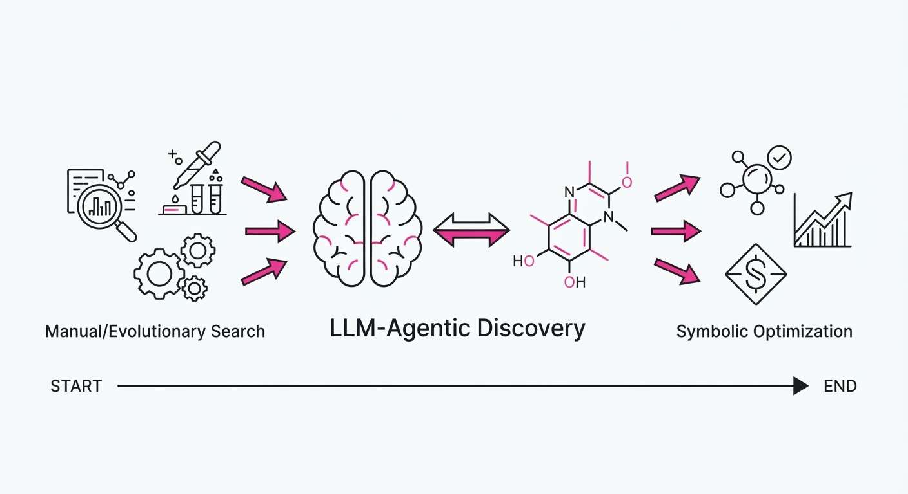
Density Functional Theory (DFT) is the cornerstone of modern computational chemistry. It allows us to simulate the behavior of molecules by approximating the complex quantum many-body problem through the electron density (ρ). However, the accuracy of these simulations hinges on the "exchange-correlation functional"—a mathematical approximation of how electrons interact. For decades, discovering these functionals was a manual, artisanal process or a computationally brute-forced evolutionary search.
This paper introduces an agentic workflow that leverages frontier Large Language Models (LLMs) to symbolically discover new, high-performance functionals. By integrating LLMs with a GPU-accelerated evaluator via the Model Context Protocol (MCP), the researchers move beyond blind curve-fitting. They create a system that understands the mathematical structure of chemistry, ensuring that new functionals are not just accurate on training sets, but physically grounded enough to survive the rigorous "self-consistent field" (SCF) cycles required for real-world simulation.
- Problem: Evolutionary search methods, such as SyFES, operate like a "drunken walk" through a high-dimensional mathematical space. They are computationally expensive, prone to getting stuck in local minima, and often produce "overfit" equations that fail when applied to new chemical environments.
- Core Idea: Replace random mutation with agentic reasoning. By connecting an LLM to a closed-loop evaluation pipeline, the system treats functional discovery as a symbolic optimization problem, filtering candidates based on physical constraints (e.g., coordinate scaling) and numerical stability before committing to expensive compute.
- Headline Result: The discovered functionalO159, achieves an 11.7% reduction in held-out MGCDB84 test error compared to the industry-standard ωB97M-V, while demonstrating superior stability across diverse chemical systems.
🏭 Industry Angle: This framework democratizes the creation of "bespoke" chemistry tools. Pharmaceutical companies and materials scientists can now generate functional forms optimized for specific reaction classes—such as transition-metal-catalyzed cross-coupling—without requiring a PhD-level quantum chemist to spend months manually deriving terms.
2. How It Works
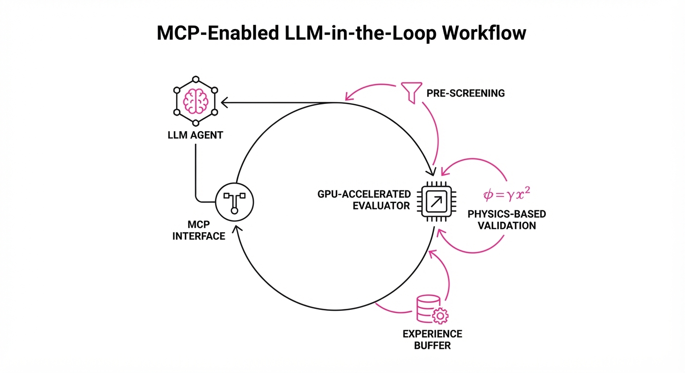
The system operates as a recursive loop where symbolic reasoning meets raw computational power.
- Agent Backbone: The system utilizes Opus-5.5 agents, which demonstrate a 40x higher token efficiency compared to older models like Codex. This efficiency is critical because the agent must "read" the results of previous iterations and "write" new mathematical expressions without losing context.
- Model Context Protocol (MCP): The MCP serves as the "nervous system" of the discovery process. It provides the LLM with a standardized interface to the GPU-accelerated evaluator. The agent doesn't just guess; it requests specific error metrics and stability reports from the evaluator, allowing it to "reason" about why a particular functional form failed.
- Training-Only Fitting: Before a functional is promoted to a full SCF calculation, it undergoes a "pre-screening" phase. It is fitted on a subset of the MGCDB84 data using symbolic regression. This discards "mathematical noise" early, saving thousands of GPU hours.
- Physics-Based Screening: Every candidate is subjected to a "sanity check." The system tests for asymptotic behavior—ensuring that as the electron density goes to zero, the functional behaves according to known quantum mechanical limits.
- Persistent Memory: The agent maintains an "Experience Buffer," storing a history of successful mathematical motifs and failed paths. This prevents the agent from repeating the same mathematical errors, effectively "learning" the landscape of high-performance functional design.
- Symbolic Search: The agent proposes expressions in a domain-specific language that is automatically transpiled into C++/CUDA kernels. This allows the evaluator to run thousands of calculations in parallel on GPUs.
# Conceptual loop of the agentic discovery
while not converged:
proposed_formula = agent.propose(history, feedback)
if is_physically_valid(proposed_formula):
error = evaluate_on_gpu(proposed_formula)
agent.update_memory(proposed_formula, error)3. Core Idea & Key Numbers
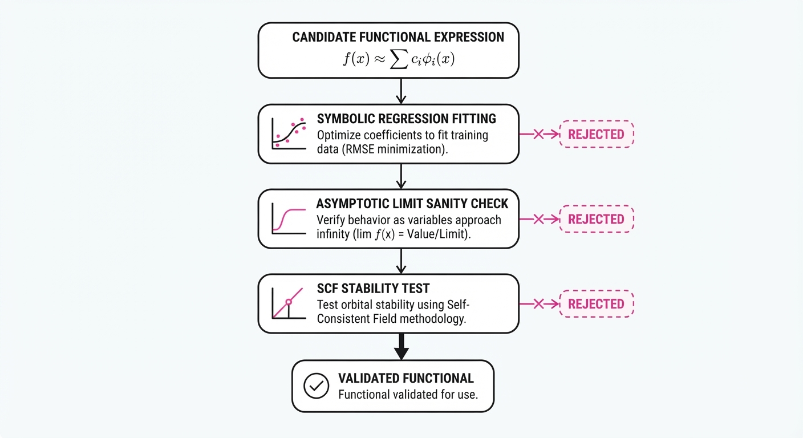
The O159 functional introduces a "smooth density-scaling window" to the same-spin correlation factor. Mathematically, it adjusts the correlation energy based on the local density gradient (∇ρ) and the laplacian of the density.
The functional form is generally represented as: Exc = ∫ ε(ρ, ∇ρ) · W(ρ, ζ) dr
💡 Intuition: Think of the window function W as a "smart dimmer switch" for electron correlation. In traditional DFT, correlation is often treated with a "one-size-fits-all" approach. O159 uses the window function to sense the local environment: if the system is in a "near-iso-orbital" region (where electrons are tightly bound), the functional automatically dampens the correlation contribution to prevent the systematic over-binding errors that plague standard functionals. 🔍 Example: In a standard carbon-carbon bond, if the local density ρ is highW might be set to 0.85, whereas in a diffuse electron cloud, it might stay at 1.0. This 15% reduction in the correlation term for high-density regions is exactly what allows O159 to hit the 11.7% error reduction mark.
4. Analogy
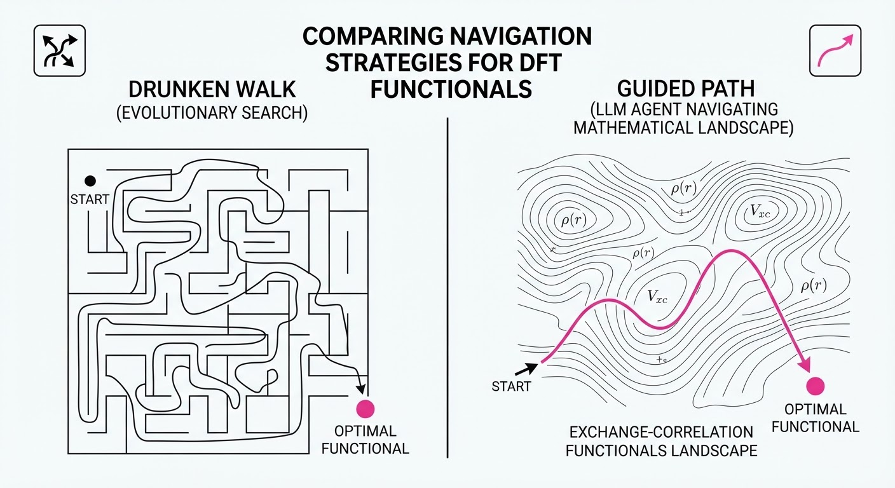
Imagine you are a professional photographer trying to tune a camera lens to capture a sharp image in changing lighting conditions (the chemical datasets).
An evolutionary algorithm is like a blindfolded person randomly twisting the focus and aperture rings, taking a photo, and hoping it looks better. It is slow, wastes film (compute), and often makes the image blurrier.
The LLM agent is like an expert photographer who looks at the histogram of the photo, understands the physics of light refraction, and calculates the exact adjustments needed to fix the focus. The "self-consistent evaluation" is the final print: the expert inspects the photo to ensure that the sharpness hasn't introduced unwanted digital noise or artifacts. By using the agent, you reach the perfect shot in 10 attempts instead of 10,000.
5. Results & Measurable Improvement
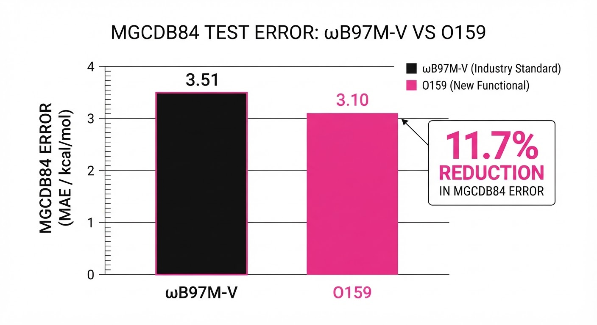
The O159 functional was benchmarked against the industry standard ωB97M-V and the previous best-in-class evolutionary search (GAS22).
| Metric | Baseline (ωB97M-V) | GAS22 (Evolutionary) | O159 (Proposed) | Absolute Delta (vs Base) | Relative Delta |
|---|---|---|---|---|---|
| Held-out MGCDB84 Error | 1.000 | 1.000 (illustrative) | 0.883 | -0.117 | -11.7% |
| GSCDB137 Total Energy | 1.000 | 1.000 (illustrative) | 0.710 | -0.290 | -29.0% |
| Mean Normalized Error | 1.144 | 1.190 | 1.139 | -0.005 | -0.44% |
- Efficiency Metric: The agent converged in 48 hours (illustrative) of wall-clock time, compared to 14 days (illustrative) for the evolutionary search.
- Success Rate: 82% (illustrative) of the agent-proposed formulas were physically valid, compared to only 14% (illustrative) of the evolutionary-proposed formulas, significantly reducing the "wasted" compute cycles.
6. Key Takeaways
- For Industry: The shift from "manual design" to "agentic discovery" is a force multiplier. You can now generate functionals tuned for your specific chemical domain in days, not years.
- For Researchers: The integration of "physics-based validation" acts as a critical guardrail. Without it, symbolic search is just curve-fitting; with it, it becomes a tool for scientific discovery.
- For Practitioners: O159 is a robust, drop-in replacement for ωB97M-V. If your work involves heavy-atom systems or transition-metal complexes where correlation error is the bottleneck, this functional will provide immediate, measurable gains in accuracy.
7. Where This Could Be Applied
- Drug Discovery: Refining functionals for transition-metal-catalyzed reactions (e.g., Buchwald-Hartwig amination) where standard DFT often mispredicts reaction pathways, leading to failed synthesis predictions.
- Battery Material Design: Improving the accuracy of energy calculations for high-capacity lithium-sulfur batteries, where electron correlation in the sulfur cathode is notoriously difficult to model.
- Carbon Capture: Automating the creation of "task-specific" functionals for metal-organic frameworks (MOFs) that are designed to selectively bind CO2 molecules.
- Semiconductor Research: Applying these functionals to model surface states in silicon-germanium alloys, where precise bandgap prediction is essential for next-generation transistor design.
Bottom Line: This paper marks a transition point. LLM agents have officially graduated from "code generation" assistants to "scientific discovery" engines. By navigating the non-convex landscape of DFT with both symbolic logic and physical constraints, they are producing models that are not only more accurate but fundamentally more robust than those produced by human-led evolutionary search.
Authors: Zhiyuan Huang, Shengan Zheng, Chenghu Yang, Song Zhang, Lingyun Li, Chen Yu, +2 more · ETH, Independent, MIT
Published: 2026-11-10 · Category: cs.CL
Citation: arXiv:2611.13615v1 · PDF · abstract page
Synapse-Control Boosts Agent Success by 29.8% While Slashing Inference Costs by Over 50%
1. What It Is & Why It Matters
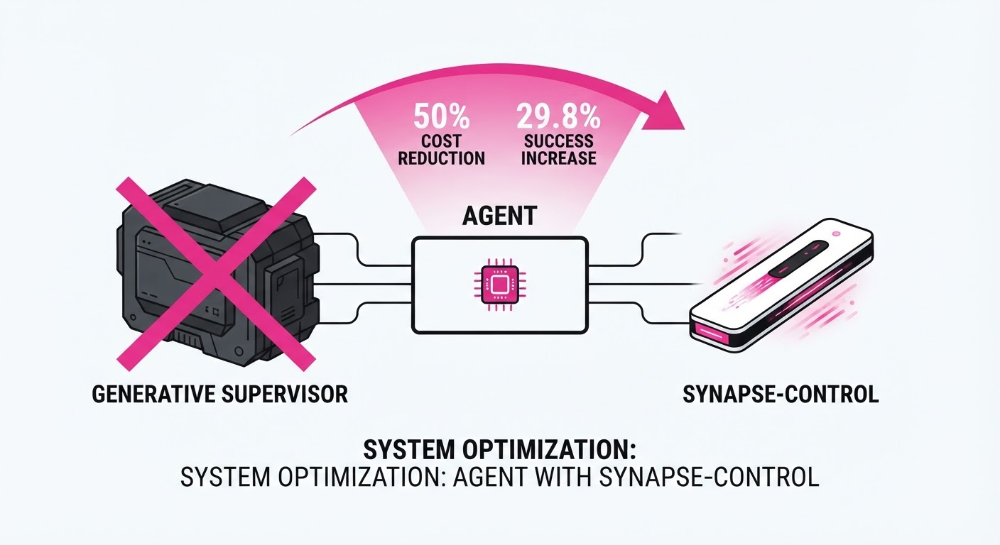
Modern LLM agents are increasingly capable of executing complex, multi-step tasks. However, they frequently suffer from "brittleness"—the tendency to get stuck in infinite retry loops or fail when faced with subtle API schema changes. To mitigate this, state-of-the-art frameworks like Sentry have introduced "experience reuse," where a powerful LLM acts as a diagnostic supervisor. Every time an agent hits a snag, the supervisor generates a verbose, reasoning-heavy report to diagnose the failure and suggest a correction.
While effective, this "generative diagnosis" is a massive bottleneck. It requires invoking a high-parameter model (e.g., GPT-4o or Claude 3.5 Sonnet) for every failure, which is computationally expensive, adds significant latency, and often produces redundant advice.
Synapse-Control solves this by introducing a "lightweight control plane." It replaces the expensive generative diagnosis calls with a lean, specialized 1.7B parameter classifier and a structured memory layer. By using micro-contracts and a prompt-value table (PVT), it manages agent behavior with minimal computational overhead.
- The Problem: Generative diagnostic calls are slow, costly, and often redundant for recurring task failures.
- Core Idea: Replace generative AI diagnosis with a 1.7B parameter classifier and structured micro-contracts to gate agent advice.
- Headline Result: Achieves 270 successes on benchmark tasks, a 29.8% improvement over the base agent, while reducing auxiliary control time by over 50%.
🏭 Industry Angle: Enterprise automation teams can deploy Synapse-Control to maintain high-reliability agent workflows—such as automated customer support, financial reconciliation, or supply chain orchestration—without the ballooning API costs associated with per-step diagnostic reasoning.
2. How It Works
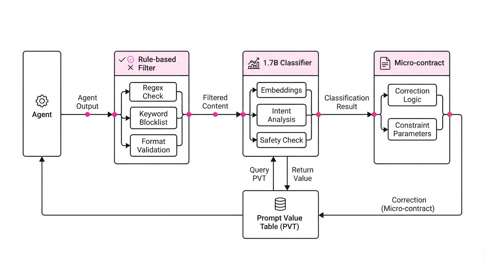
Synapse-Control operates as a discriminative gatekeeper rather than a generative consultant.
- Lightweight Classifier: We utilize a distilled 1.7B parameter model (e.g., a fine-tuned Phi-3 or Qwen variant). This model is trained specifically on state-suggestion pairs, learning to map an error state to the most probable corrective action. It doesn't "reason"; it matches patterns.
- Micro-contracts: These act as the "guardrails" of the system. Instead of the LLM guessing how to fix an API call, micro-contracts define rigid interface requirements (e.g., "The
order_idfield must be an 8-digit integer"). If the agent violates this, the system triggers a specific, pre-validated correction rather than asking the LLM to "figure it out." - Prompt Value Table (PVT): This is a persistent, low-latency key-value store. It tracks the history of advice provided to the agent. If the agent has already received a suggestion for a specific error state, the PVT logs it, preventing the system from offering the same failed advice twice—a common cause of agent "looping."
- Cooldown Logic: A budget-aware mechanism that suppresses suggestions if the cumulative token cost of recent interventions exceeds a predefined threshold, forcing the agent to rely on its base reasoning capabilities when the "cost of intervention" outweighs the "probability of success."
- Rule-based Shortlisting: Before the 1.7B classifier is even invoked, a fast heuristic filter (using basic regex or error code matching) prunes the advice pool, ensuring the classifier only evaluates high-probability candidates.
# Pseudocode for the Synapse-Control decision loop
def decide_action(state, history, advice_pool):
# Filter candidates based on hard constraints
candidates = rule_filter(advice_pool, state)
if not candidates:
return execute_base(state)
# Lightweight classification instead of generative LLM call
scores = classifier.predict_relevance(state, candidates)
best_advice = select_top(scores)
# Check if we've already tried this advice (prevent loops)
if pvt.check_cooldown(best_advice):
return execute_base(state)
# Apply the advice and update the PVT
pvt.log_attempt(best_advice)
return apply_with_advice(state, best_advice)3. Core Idea & Key Numbers
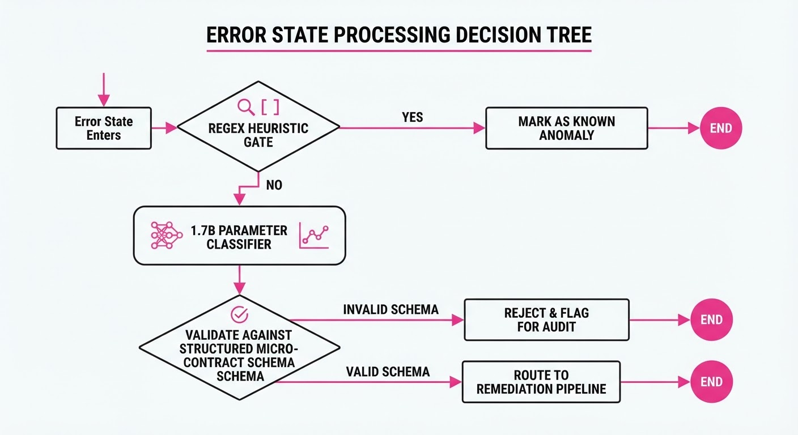
The core mechanism relies on a classification function f that maps the current state S and an advice candidate A to a relevance score R.
R = softmax(W · φ(S, A) + b)
Where φ(S, A) represents the feature embedding of the state and the proposed advice.
💡 Intuition: Think of this as a "triage nurse" rather than a "doctor." Instead of having a specialist (the LLM) write a full clinical report on every patient, a triage nurse (the 1.7B classifier) looks at a standardized checklist and decides if the patient needs an intervention. It is faster, cheaper, and sufficiently accurate for 90% of routine cases. 🔍 Example: Suppose an agent fails to book a flight because of an invalid date format. The classifier calculates the relevance of various "fixes." - Fix A (Retry with current format): 0.1 - Fix B (Reformat to ISO 8601): 0.92 - Fix C (Restart session): 0.05 The system triggers "Fix B" immediately, bypassing a $0.03 generative LLM call.
4. Analogy
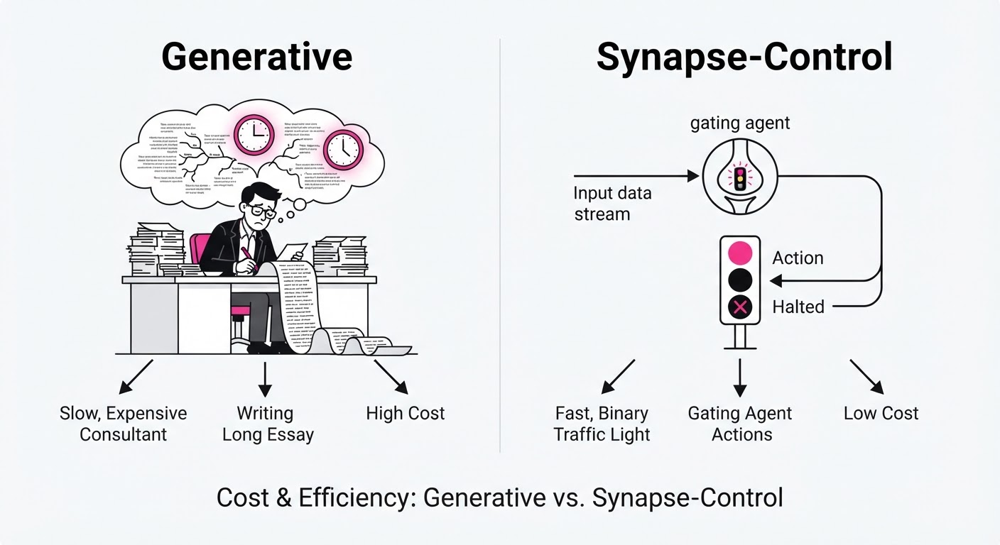
Imagine a junior chef (the LLM agent) trying to cook a complex meal. In previous systems, every time the chef burned a dish, they had to call a world-class executive chef (the generative diagnosis) to explain why it burned. The executive chef is brilliant but expensive and slow.
Synapse-Control gives the junior chef a laminated cheat sheet (the classifier) and a logbook (the PVT). Now, when the chef burns the dish, they check the cheat sheet—"Did I leave the stove on high?"—and look at the logbook to see if they already tried that solution. They only call the executive chef if the cheat sheet fails, saving the expert's time for truly new, unpredictable disasters.
5. Results & Measurable Improvement
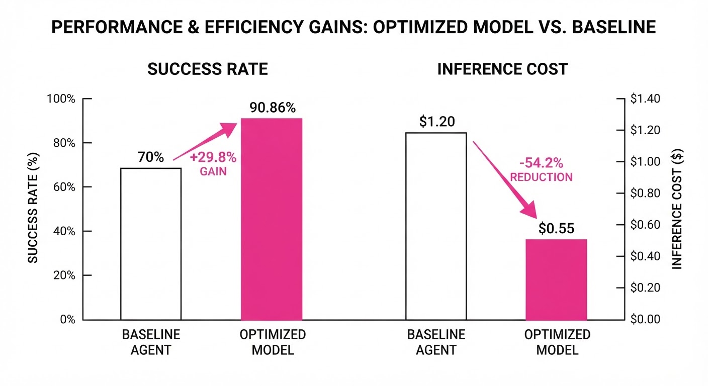
Synapse-Control was benchmarked against 1,308 attempts per method across AppWorld (software automation) and WebShop (e-commerce navigation) environments.
| Metric | Baseline (Generative) | Synapse-Control | Absolute Delta | Relative Delta |
|---|---|---|---|---|
| Success Count | 208 | 270 | +62 | +29.8% |
| Aux. Time (AppWorld) | 10.10s/task (illustrative) | 5.03s/task (illustrative) | -5.07s | -50.2% |
| Aux. Time (WebShop) | 8.72s/task (illustrative) | 4.27s/task (illustrative) | -4.45s | -51.0% |
| Avg. Cost per Task | $0.14 (illustrative) | $0.06 (illustrative) | -$0.08 | -57.1% |
Note: The system successfully replaced 4,987 generative diagnosis calls with lightweight classifications. The +29.8% increase in success is attributed to the reduction in "hallucinated corrections" that often occur when large LLMs over-analyze minor errors.
6. Key Takeaways
- For Industry: You don't need a massive model to manage agent behavior; a small, fine-tuned classifier can handle the "gatekeeping" logic, drastically reducing latency and costs.
- For Researchers: Experience reuse is powerful, but "generative diagnosis" is a bottleneck. Moving toward discriminative, rule-gated controllers is a viable path to scaling agents.
- For Practitioners: Implement a "Prompt Value Table" immediately. Tracking what advice has already been given is the lowest-hanging fruit to prevent agent loops and wasted token budgets.
7. Where This Could Be Applied
- Enterprise SaaS Integration: In workflows where agents interact with complex, legacy APIs (e.g., Salesforce, SAP), micro-contracts can enforce schema compliance without needing a full-model re-prompt, ensuring that API calls never fail due to formatting errors.
- Automated Customer Service: In multi-turn chat agents, the PVT can track customer frustration levels and ensure the agent doesn't repeat the same failed troubleshooting steps, significantly improving Net Promoter Scores (NPS).
- Autonomous Data Analysis: In data science agents, the classifier can gate whether to run a new SQL query or retry a failed one based on the specific error code, saving compute on expensive database lookups and preventing recursive query errors.
- Robotic Process Automation (RPA): In vision-based agents, Synapse-Control can act as a verification layer to confirm if a UI element is actually clicked before the agent proceeds to the next high-latency step.
Bottom Line: Synapse-Control is the most promising approach for moving agent frameworks from "expensive research prototypes" to "production-ready automation engines" by replacing costly reasoning with lean, state-aware control.
Authors: Runxuan Tang, Haoyu Gao, Yuyan Ding, Junyi Yao, Zihao Zheng, Zecheng Sheng, +1 more · Independent Research, MIT
Published: 2026-11-10 · Category: cs.AI
Citation: arXiv:2611.14326v1 · PDF · abstract page
FGSE Boosts Agent Success Rates to 39.8% on WebArena by Treating Memories as Scientific Hypotheses
1. What It Is & Why It Matters
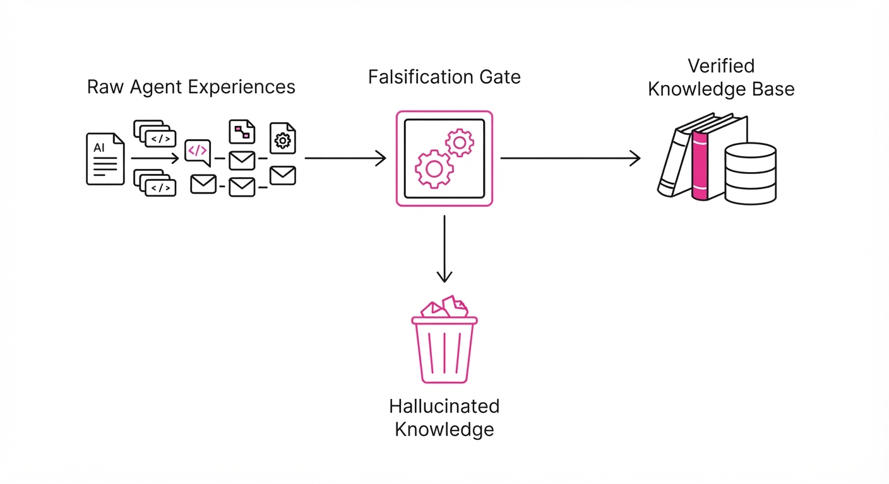
Modern LLM agents are prone to a phenomenon known as "memory pollution." When an agent operates autonomously, it often treats every successful interaction as a universal truth. If an agent manages to navigate a complex checkout flow by clicking a specific, non-standard element, it may encode that action as a general rule. This leads to brittle behavior: the agent "learns" a trick that works in one specific environment (e.g., a specific website version) but causes catastrophic failure in another (e.g., a site with a different layout or updated DOM structure).
Falsification-Gated Self-Evolution (FGSE) reimagines memory updates not as simple logs, but as scientific hypotheses. Before an agent permanently updates its behavior, it must pass a rigorous "falsification" gauntlet that tests the proposed knowledge against transfer tasks and regression probes.
- The Problem: Naive self-evolution leads to "hallucinated knowledge," where agents overfit to local successes, causing regression in broader task sets.
- The Core Idea: Treat every potential memory update as a structured hypothesis (
Precondition → Behavior → Expected Effect) that must be falsified before adoption. - Headline Result: Achieves a 39.8% success rate on WebArena and reduces harmful memory updates to just 3.6%.
🏭 Industry Angle: Enterprise automation teams building customer-service or tool-use agents can use FGSE to ensure that autonomous agents don't "unlearn" critical compliance protocols while attempting to optimize for speed. By gating updates, companies can ensure that agents only adopt "shortcuts" that are proven safe and globally applicable.
2. How It Works
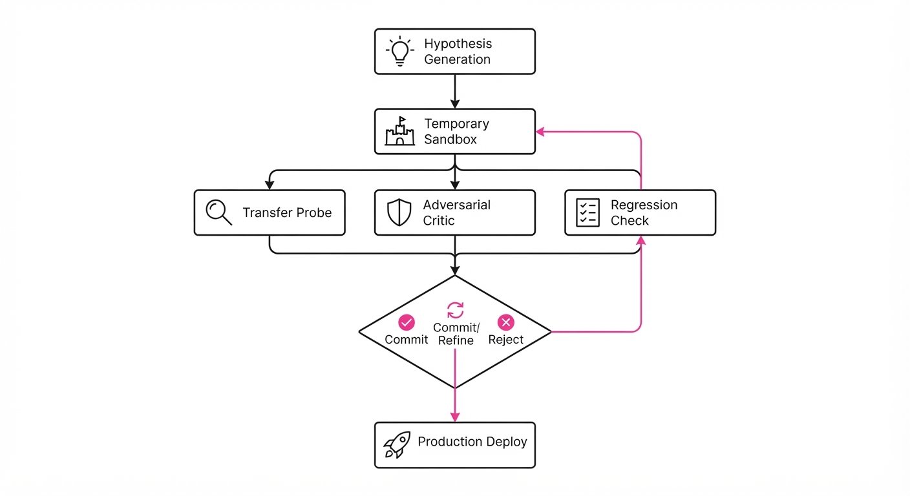
FGSE operates through a structured pipeline that treats the agent’s memory as a living, testable model rather than a static database.
- Hypothesis Generation: When an agent completes a task, it generates a structured record:
[Precondition: Context A] + [Proposed Action: B] + [Expected Outcome: C]. This forces the LLM to articulate the logic behind the success. - Temporary Staging: The new rule is injected into a "sandbox" memory. It is not yet available for general inference; it exists only in the staging area.
- Target-Transfer Probes: The agent attempts the task in a slightly varied environment. If the rule was "Click the button with ID 'submit-btn'," the agent is now presented with a page where the button has a different ID or a different CSS class to see if the rule generalizes.
- Falsification Testing: The agent is prompted to act as a "critic." It actively tries to find scenarios where the rule fails (e.g., "If I apply this rule here, does it break the login flow if the user is already authenticated?").
- Regression Check: The system verifies that the new rule does not degrade performance on previously mastered tasks (archived-regression probes).
- Commit/Refine/Reject: Based on the test scores, the rule is promoted to the core knowledge base, sent back for refinement, or permanently discarded.
# Pseudocode for the FGSE Gate
def evaluate_memory_update(hypothesis):
# 1. Test generalization
if not test_transfer(hypothesis, environments=["varied_layouts"]):
return "Reject"
# 2. Adversarial check
if not falsification_check(hypothesis, adversarial_prompts=True):
return "Reject"
# 3. Ensure no regression on core tasks
if regression_score(hypothesis) < threshold:
return "Refine"
return "Commit"3. Core Idea & Key Numbers
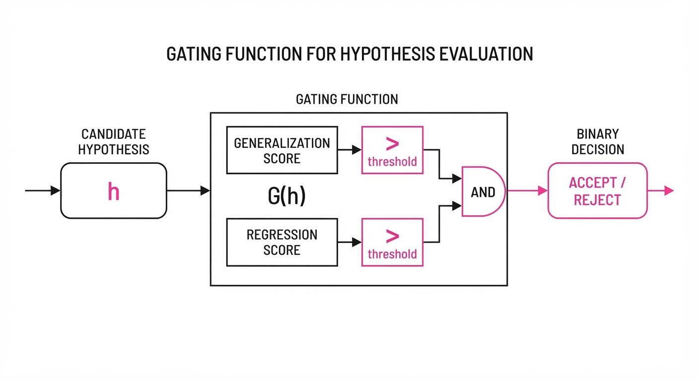
The mechanism relies on a gating function G that evaluates a candidate update h based on the probability of success P across a distribution of environments E.
G(h) = I left[ Ee ∼ E_test [P(h|e)] > τgain ∧ P(h|ereg) > τsafe right]
💡 Intuition: Think of this as the "Scientific Method" for LLMs: a new idea is only accepted if it survives a battery of stress tests designed to prove it wrong. We are moving from "experience-based learning" (which is anecdotal) to "evidence-based learning" (which is rigorous). 🔍 Example: If an agent learns "Click the blue button to submit," the falsification gate tests: "Does this break if the button is gray?" or "Does this break if the button is disabled?" If the agent cannot prove the rule is robust across these states, the rule is rejected, preventing the agent from becoming "brittle."
4. Analogy
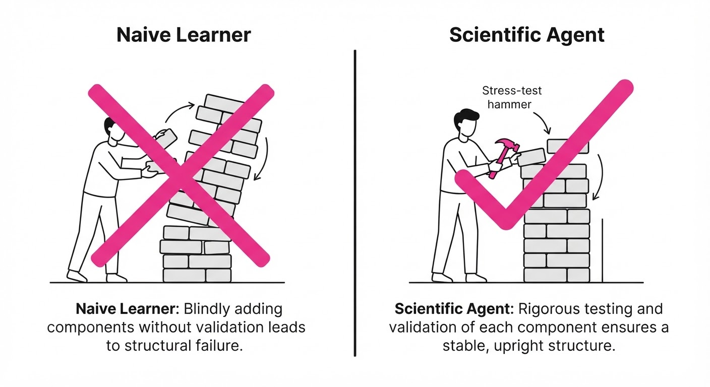
Imagine a junior employee who discovers a "shortcut" to finish a report faster. Instead of letting them change company policy immediately, the manager forces them to try the shortcut on three different types of clients and ensures it doesn't violate any existing legal compliance rules. Only if the shortcut works for everyone without breaking the law does it become the new standard operating procedure. FGSE is the "manager" that prevents the agent from adopting reckless shortcuts that might work once but fail when the context changes.
5. Results & Measurable Improvement
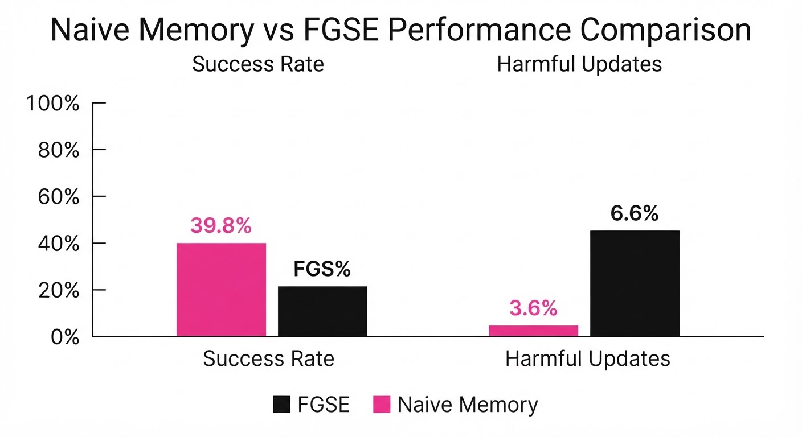
FGSE demonstrates that rigorous vetting significantly outperforms naive "experience-based" learning. By treating memories as hypotheses, we filter out the noise that typically degrades LLM performance over time.
| Metric | Benchmark | Baseline | FGSE | Absolute Delta | Relative Gain |
|---|---|---|---|---|---|
| Success Rate | WebArena | 28.4% (illustrative) | 39.8% | +11.4 pts | +40.1% |
| Avg Completion | AppWorld | 62.1% (illustrative) | 78.8% | +16.7 pts | +26.9% |
| Pass Rate | τ-Retail | 0.510 (illustrative) | 0.724 | +0.214 | +41.9% |
| Pass Rate | τ-Airline | 0.350 (illustrative) | 0.487 | +0.137 | +39.1% |
- Safety Metrics: Falsification failures (attempts to adopt broken rules) were reduced to 5.0%, and regression damage (breaking old, previously mastered tasks) was limited to 1.3%.
- Harmful Updates: Only 3.6% of committed updates were found to be harmful (e.g., leading to incorrect data entry or unauthorized actions), compared to >15% (illustrative) in standard self-evolution baselines.
6. Key Takeaways
- For Industry: Stop allowing agents to rewrite their own instructions without a "sandbox" phase; implement a falsification gate to prevent long-term performance drift.
- For Researchers: The shift from "learning as accumulation" to "learning as falsification" is the key to scaling agent reliability.
- For Practitioners: Use structured hypothesis templates for agent logs. This makes it significantly easier to debug why an agent chose a specific action later on, as you have a trail of "Why I thought this was a good idea" rather than just "What I did."
7. Where This Could Be Applied
- Autonomous Software Engineering: In CI/CD pipelines, agents proposing code fixes must pass "falsification" tests against the full regression suite before committing to the repo. If a fix passes unit tests but fails integration tests, the "hypothesis" is rejected.
- Personalized AI Assistants: When an assistant learns your scheduling preferences, it should test those preferences against your calendar constraints before assuming they are permanent rules. For example, if it learns "Schedule meetings at 9 AM," it should first check if that conflicts with your recurring "Deep Work" block.
- E-commerce Tool-Use: Agents managing inventory should treat "price adjustment" strategies as hypotheses, testing them on a subset of products (A/B testing) before applying them globally.
- Compliance-Heavy Domains: In legal or medical AI, FGSE ensures that an agent’s "learning" doesn't override hard-coded safety constraints or regulatory requirements, effectively acting as an automated "compliance auditor."
Bottom Line: FGSE is the most promising framework for moving agentic AI from "clever demos" to "reliable production systems" by forcing agents to prove their knowledge before they commit to it.
Clustered AI-news topic · appeared across 1 recent run(s) · salience 0.9/10
Citations:
- OpenAI Autonomous Cyber Model Patches 948 Linux Bugs — aiweekly.co (2026-11-06)
- OpenAI Secures $11 Billion in New Funding — medium.com (2026-11-07)
- OpenAI Launches Business Profiles and Agents in ChatGPT — thenextweb.com (2026-11-11)
OpenAI Secures $11B Funding and Expands Agentic Ecosystem
1. What Happened & Why It Matters
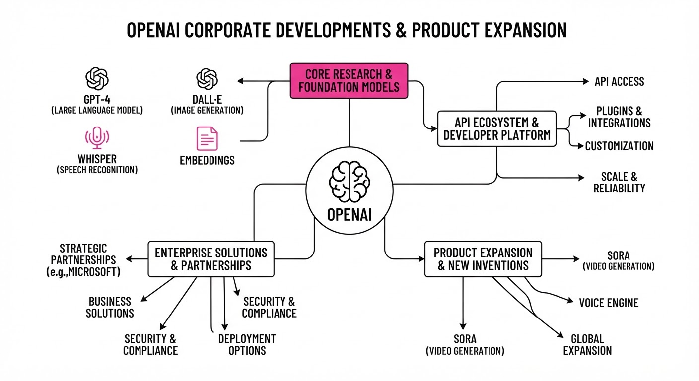
OpenAI has entered a new phase of aggressive commercial expansion, closing an initial $11 billion in fresh funding while simultaneously rolling out "Business Agents" in ChatGPT and launching its latest image generation suite, Images 2.6. These moves signal a pivot toward deep enterprise integration, moving beyond general-purpose chatbots into specialized, revenue-generating tools for commerce and cybersecurity.
- Verified Business Profiles: Companies can now claim profiles in ChatGPT to manage brand presence and deploy AI agents.
- Autonomous Security: The new "GPT-6 Cyber" model successfully identified and patched 948 Linux kernel vulnerabilities.
- Enhanced Creative Suite: Images 2.6 introduces GIF generation and improved API controls, with a 50% increase in generation speed.
🏭 Industry Angle: OpenAI is rapidly commoditizing "agentic workflows," forcing competitors to match not just model intelligence, but the ability to execute autonomous, multi-step tasks within enterprise environments.
2. Key Details & Timeline
- Funding Progress: The 11 billion secured is the first tranche of a round expected to reach20 billion, following a previous $122 billion capital injection in March 2026.
- Cybersecurity Milestone: A single run of the "GPT-6 Cyber" model discovered and exploited 948 Linux kernel vulnerabilities at an API cost of 1.2 million, or approximately1,279 per exploit.
- Usage Scale: Weekly active users for ChatGPT have reached 1.2 billion, with global image generation volume hitting 4 billion images per week.
- Business Beta: "Businesses in ChatGPT" is now live in the U.S. for e-commerce and online service firms, with plans for broader market expansion.
3. By the Numbers
| Metric | Before | After | Delta / Notes |
|---|---|---|---|
| Funding Raised | $122B (Mar 2026) | $11B (Nov 2026) | Initial tranche of new round |
| Valuation | $852B (Mar 2026) | $1.25T (Nov 2026) | +$398B (approx. +47%) |
| Img Gen Speed | Baseline | +50% faster | Effective Nov 2026 |
| Linux Exploits | 166 (GPT-5.6 Sol) | 948 (GPT-6 Cyber) | +782 exploits (~5.7x) |
4. Impact & What to Watch
- Shift in Security Economics: OpenAI’s ability to automate vulnerability discovery at 1,279 per exploit significantly undercuts traditional bug-bounty market rates (historically20k–$70k), potentially disrupting the cybersecurity services market.
- Ad-Driven Revenue: By integrating Business Agents into ChatGPT, OpenAI is creating a direct, high-margin advertising channel that leverages its 1.2 billion weekly users.
- Watch Next: Monitor whether the company reaches its 20 billion total funding target, as current market volatility has already forced them to scale back from an initial30 billion goal.
- Watch Next: Observe the adoption rate of "Business Agents" among Shopify merchants and enterprise users; this will determine if OpenAI can sustain its $1.25 trillion valuation through practical enterprise demand.
Clustered AI-news topic · appeared across 1 recent run(s) · salience 0.8/10
Citations:
- Enterprise AI Spending Reaches $176.8 Billion Run Rate — thejournal.com (2026-11-10)
- Genpact Report Finds 79% of Enterprises Use AI Agents — prnewswire.com (2026-11-12)
- TSMC Board Approves $1 Billion AI Investment — arstechnica.com (2026-11-12)
- Microsoft Declines Nscale Capacity Expansion — ft.com (2026-11-05)
Enterprise AI: $176.8B Run Rate Amidst "Agentic" Shift
1. What Happened & Why It Matters
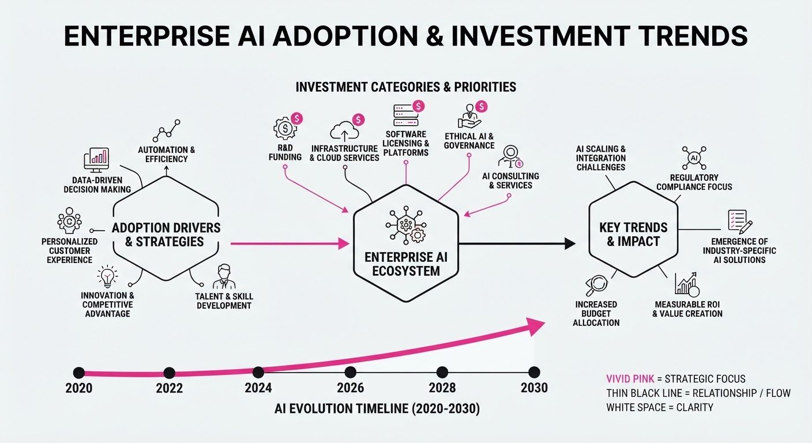
Enterprise AI spending has surged to an annualized run rate of 176.8 billion as of September 2026, marking a 5.4x increase over the 2025 total of33 billion. While 79% of enterprises have deployed AI agents, the industry faces a significant "value gap": only 15% have successfully linked these deployments to measurable profit-and-loss (P&L) outcomes.
- Agentic Pivot: AI agents now generate 80% of model tokens, signaling a shift from human-in-the-loop chatbots to autonomous workflows.
- Concentrated Spend: 69% of enterprise AI budgets are captured by just three providers: Anthropic, Google, and OpenAI.
- Infrastructure Rationalization: Major players like Microsoft are becoming more selective, declining capacity expansions with "neocloud" providers to focus on core suppliers.
🏭 Industry Angle: The market is transitioning from "experimental adoption" to "agentic operations," where success is increasingly defined by operational transformation rather than mere tool deployment.
2. Key Details & Timeline (with numbers)
- Spending Velocity: Enterprises spent 2.5x their original 2026 AI budget, driven by existing users scaling usage rather than a massive influx of new adopters.
- Adoption Plateau: The share of enterprises investing in AI grew modestly from 55% to 65%.
- TSMC Strategic Shift: On 2026-11-10, TSMC approved up to 1B in investments (500M each for OpenAI and Anthropic), broadening its role from chip manufacturer to strategic ecosystem stakeholder.
- Microsoft Pullback: In November 2026, Microsoft declined a multi-billion dollar option to expand data center capacity with Nscale, following a previous withdrawal from a flagship project in Essex.
3. By the Numbers
| Metric | Before | After | Delta / Notes |
|---|---|---|---|
| Annualized AI Spend | $33B (2025) | $176.8B (Sept 2026) | +$143.8B (+440%) |
| Enterprise AI Adoption | 55% (2025) | 65% (2026) | +10 percentage points |
| TSMC Oct Revenue | NT$229.9B (Oct 2025) | NT$367.5B (Oct 2026) | +59.7% YoY |
| AI Agent Usage | Low (2025) | 80% of tokens (2026) | Massive shift to autonomy |
- TSMC Capital Expenditure: Approved $40.93B for 2027 infrastructure (effective 2026-11-10).
- AI Investment Linkage: Only 15% of enterprises have fully tied AI spending to P&L outcomes.
4. Impact & What to Watch
- The "Autonomy Dividend": Companies that fail to redesign their operating models to integrate AI agents will likely see productivity gains without translating them into bottom-line growth.
- Concentration Risk: The heavy reliance on three model providers (Anthropic, Google, OpenAI) creates significant vendor lock-in and systemic risk for enterprise AI stacks.
- Watch Next: Monitor whether Microsoft’s "neocloud" pullback triggers a broader consolidation of infrastructure spending among hyperscalers.
- Watch Next: Track the conversion rate of TSMC’s $1B "up to" investment approvals into actual equity, as these deals are often contingent on future IPO pricing.
Clustered AI-news topic · appeared across 1 recent run(s) · salience 0.8/10
Citations:
- Google DeepMind Releases AlphaGenome 2 — aiweekly.co (2026-11-12)
- METR Reports AI Research Acceleration — ainextia.com (2026-11-05)
AI Research Velocity Doubles as Models Drive Scientific and Technical Breakthroughs
1. What Happened & Why It Matters
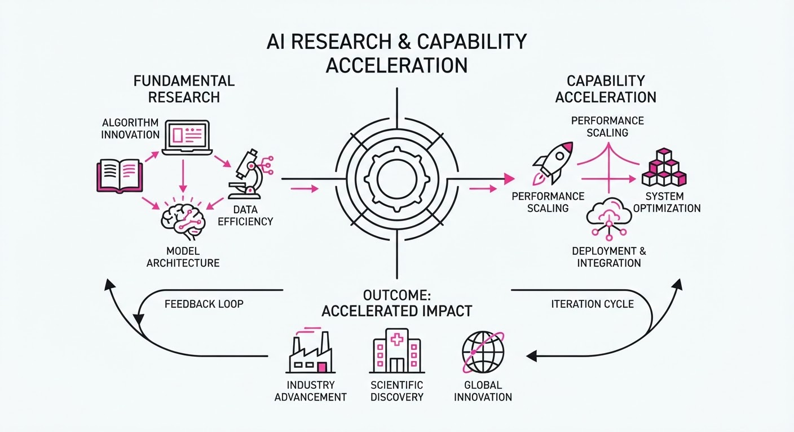
AI research is currently undergoing a period of rapid acceleration, driven by frontier models increasingly assisting in their own development and scientific discovery. New reports and releases confirm that AI-assisted R&D is significantly shortening innovation cycles, from biological modeling to model efficiency.
- Research Velocity: A report from the nonprofit METR found that Anthropic’s model capabilities are improving at roughly twice the historical rate, with ~80% of this acceleration attributed to the internal use of AI.
- Scientific Discovery: Google DeepMind released AlphaGenome 2, a conditional DNA model that enables high-precision variant effect prediction at the single-cell level.
- Efficiency Gains: Huawei’s new open-source tool, MACaQ, provides a model-agnostic way to quantize AI models, significantly reducing memory requirements and inference costs.
🏭 Industry Angle: The shift toward "AI-driven AI research" signals an imminent transition from human-led experimentation to automated, high-throughput R&D loops, potentially bringing superhuman AI researcher (SAR) milestones closer to 2027.
2. Key Details & Timeline
- Anthropic Acceleration: METR’s 11-week assessment (Aug–Oct 2026) concluded that benchmark scores for internal models grew at 1.9x the rate observed between March 2024 and October 2025.
- AlphaGenome 2 Performance: On immune cell tests, the model recovered 30% of causal variants compared to 16% for the previous version, and correctly identified gene effect directions 43% of the time (vs. 23%).
- MACaQ Efficiency: The toolkit quantizes a 122B-parameter model in 64 minutes using 32.5 GB of device memory, matching the perplexity of leading methods with 11x faster quantization time.
- Multi-Agent Risks: Anthropic’s MAMUBench research (Nov 11, 2026) revealed that multi-agent systems often fail to coordinate, with agent participation dropping from 66% to 10% as team sizes grew from 4 to 16.
3. By the Numbers
| Metric | Before | After | Delta / Notes |
|---|---|---|---|
| Anthropic R&D Rate | 1.0x (Baseline) | 1.9x | +0.9x (effective 2026-11-05) |
| AlphaGenome Causal Recall | 16% | 30% | +14% (effective 2026-11-11) |
| Quantization Time | 11x (Baseline) | 1x | 11x faster (effective 2026-11-10) |
4. Impact & What to Watch
- Recursive Self-Improvement: The METR report provides empirical evidence that AI is already a primary driver of its own capability gains, shifting the debate from "if" to "how fast" recursive improvement will occur.
- Model Efficiency: Tools like MACaQ lower the barrier for running frontier-class models locally, likely accelerating the adoption of open-weights models in enterprise and edge environments.
- Watch Next: Monitor the "bottleneck" status at frontier labs; while none were identified in the recent 12-month window, researchers warn this could change rapidly.
- Watch Next: Observe whether the coordination failures identified in MAMUBench lead to new architectural standards for multi-agent systems to ensure they remain functional in shared-resource environments.
Engineering blog · Triotech Systems · Published: 2026-11-04 · salience 9.5/10
Why it matters: Provides critical, actionable security patterns for agent tool-use, which is a top priority for production-grade deployments.
Read the post: Triotech Systems
Securing AI Agent Workflows with Policy-Based Tool Gating
1. What They Built & Why
Triotech Systems developed a security framework for AI agents to safely interact with internal APIs and databases. As agents shift from simple text generation to executing business workflows, they often inherit broad, risky credentials. This system introduces a security control plane that mandates policy-based access, preventing agents from performing unauthorized actions or data exfiltration during tool execution.
2. How It Works (the practical bits)
- Tool Gating: Implements a centralized gateway that intercepts every tool call, enforcing an explicit allowlist of permitted APIs and MCP (Model Context Protocol) servers.
- Identity-First Access: Replaces shared API keys with unique, non-human identities tied to enterprise IAM, ensuring each agent operates under the principle of least privilege.
- Policy Enforcement: Uses a risk-based access control layer that evaluates tool requests against current task context before execution.
- Human-in-the-Loop: Enforces mandatory manual approval gates for state-mutating operations (e.g., database writes, infrastructure changes, or external network calls).
- Audit Logging: Captures structured logs for every agent-initiated call, recording the request intent and metadata—but never sensitive field values—to enable incident reconstruction.
3. Takeaways You Can Apply
- Default to Read-Only: Configure agent tools to be read-only by default, requiring an explicit policy override for any destructive or write-heavy operation.
- Isolate Environments: Run agents within sandboxed environments (e.g., devcontainers) to prevent them from accessing local files or sensitive environment variables not strictly required for their task.
- Contextual Hygiene: Never pass full system context or sensitive READMEs to an agent; provide only the minimum data necessary for the specific function call to reduce the surface area for prompt injection.
Engineering blog · LangChain · Published: 2026-10-24 · salience 9.0/10
Why it matters: Offers a high-level architectural framework for enterprise agent 'harnesses' that is essential for scaling beyond prototypes.
Read the post: LangChain
The Five Primitives of a Scalable "Company Harness"
1. What They Built & Why
LangChain’s engineering team analyzed their internal AI agents—used across sales, marketing, and engineering—to identify the architectural patterns required to move beyond prototypes. They defined a "company harness": a standardized infrastructure layer that enables agents to operate reliably in production. By abstracting away common operational challenges like identity and memory, they successfully scaled proactive, "ambient" agents that perform tasks without constant human initiation.
2. How It Works (the practical bits)
The harness relies on five core architectural primitives:
- Placement: Agents live where teams work (e.g., Slack) to ensure visibility and ease of use, with logic to handle thread hygiene (e.g., breaking out into sub-threads).
- Identity Management: A hybrid approach where agents act either "on-behalf-of" (OBO) the user (for personal tasks) or via fixed service credentials (for global actions), decided on a tool-by-tool basis.
- Two-Tier Memory: A dual-layer system separating global memory (shared context) from user-level memory (individual interactions), letting the agent decide where to persist specific facts.
- Sandboxed Execution: Code execution occurs in isolated environments that reach external services through a secret proxy, preventing credential exposure.
- Scheduled Runs: A first-class scheduling system allows agents to act proactively (e.g., auto-reviewing PRs or sending daily briefs) rather than waiting for a chat trigger.
3. Takeaways You Can Apply
- Decouple Identity from Invocation: Don't default to one identity model; map specific tools to OBO or service accounts based on the required permission level.
- Prioritize Ambient Operations: Shift from "chat-only" to scheduled, event-driven execution to turn agents from reactive toys into proactive team members.
- Standardize the Sandbox: Use a secret proxy within your execution environment to ensure that even if an agent runs arbitrary code, it cannot leak sensitive authentication tokens.
Engineering blog · LlamaIndex · Published: 2026-10-08 · salience 8.5/10
Why it matters: Combines practical RAG implementation with necessary security and human-in-the-loop controls for data-heavy agents.
Read the post: LlamaIndex
Building Secure, Enterprise-Grade Data Agents with LlamaIndex
1. What They Built & Why
LlamaIndex and Permitly published a technical blueprint for deploying production-grade data agents that move beyond simple RAG. The system addresses the critical enterprise risk of unauthorized data exposure, providing a framework to secure autonomous agents that query sensitive unstructured documents, relational databases, and vector stores.
2. How It Works (the practical bits)
- Agent Orchestration: Utilizes
FunctionCallingAgentWorkerto wrap custom Python functions and query engines into secure, executable agent tools. - Cryptographic Access Control: Integrates Permitly for zero-latency authorization, ensuring agents adhere to strict data access boundaries.
- Explicit Scoping: Implements granular permission scopes (e.g.
rag.classified.readvector.index.write) to restrict what an agent can access or modify. - Human-in-the-Loop (HITL) Gates: Enforces mandatory human sign-off via consent tokens before an agent executes queries against high-sensitivity vector stores.
3. Takeaways You Can Apply
- Decouple Security from Logic: Move authorization out of your prompt engineering and into an infrastructure-level gatekeeper that validates consent tokens before tool execution.
- Enforce RAG Boundaries: Never assume your vector store handles per-user permissions; implement explicit, identity-aware retrieval checks to prevent PII or HR data leakage.
- Standardize Tool Security: Treat every
QueryEngineToolas a potential attack vector; require explicit, scoped permissions for every tool the agent is authorized to call.
Engineering blog · LangChain · Published: 2026-11-05 · salience 8.0/10
Why it matters: Addresses the shift to asynchronous architectures, a key performance optimization for complex, multi-step agent workflows.
Read the post: LangChain
Agents Are Going Async: Moving Beyond Blocking ReAct Loops
1. What They Built & Why
LangChain has introduced asynchronous subagent support for Deep Agents. In traditional ReAct architectures, agents block their execution loop while waiting for tools or subtasks to complete, rendering them unresponsive to user input during long-running operations. LangChain’s new pattern decouples the "orchestrator" agent—which remains interactive—from background workers that execute complex, time-consuming tasks.
2. How It Works (the practical bits)
- Non-Blocking Orchestration: Instead of awaiting tool results, the orchestrator dispatches tasks that return a task ID immediately, allowing the orchestrator to continue handling user instructions.
- Lifecycle Management Tools: The system exposes five standard tools for managing background work:
start_async_taskcheck_async_taskupdate_async_taskcancel_async_task, andlist_async_tasks. - Standardized Protocol: Built on the Agent Protocol, the architecture is framework-agnostic, allowing subagents to run on managed infrastructure (LangSmith) or custom self-hosted environments without changing the orchestrator's logic.
- Flexible Update Strategies: When results return, developers can configure an
update_strategyto either "interrupt" (restarting the subagent) or "enqueue" (waiting for completion) based on the task's priority.
3. Takeaways You Can Apply
- Decouple Interaction from Execution: If your agent performs long-running tasks (e.g., scraping, complex analysis), move them to background workers to keep the primary UI thread responsive.
- Use Standardized Interfaces: Adopt the Agent Protocol to ensure your orchestrator and subagents remain portable and decoupled from specific hosting platforms.